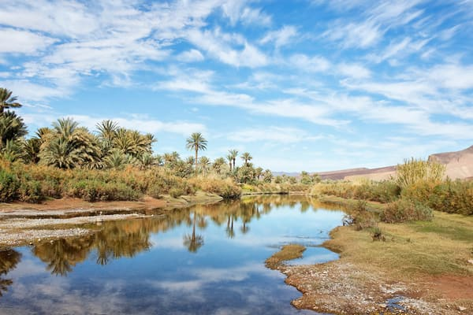
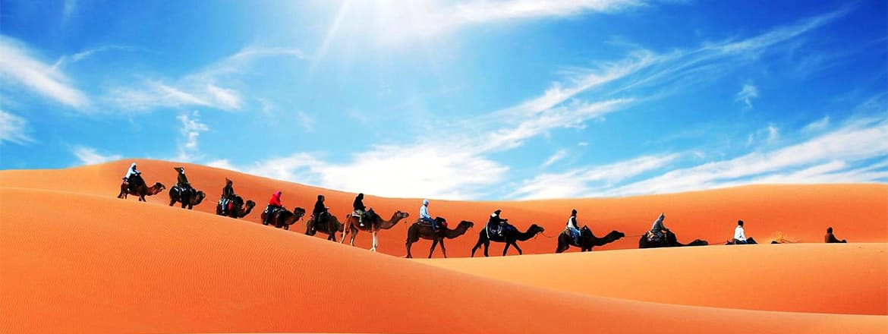
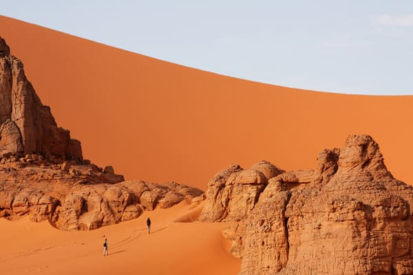
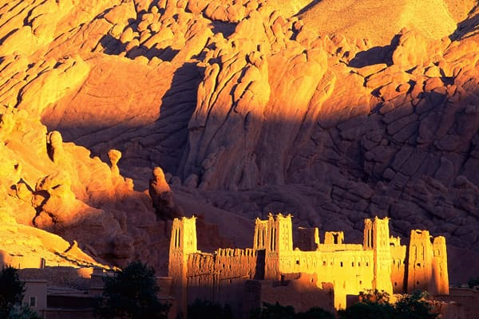
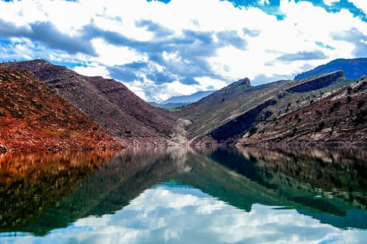

Ouarzazate et Zagora, 2 jours
Un circuit classique de deux jours et une nuit vers Zagora et les dunes de Tinfou depuis Marrakech en passant par Ait Ben Haddou, Ouarzazate et la...
Voir le detail
Un circuit classique de deux jours et une nuit vers Zagora et les dunes de Tinfou depuis Marrakech en passant par Ait Ben Haddou, Ouarzazate et la vallée de Daraa.....

Un circuit classique de deux jours et une nuit vers Zagora et les dunes de Tinfou depuis Marrakech en passant par Ait Ben Haddou, Ouarzazate et la...
Voir le detail
Excursion à Ouarazazate et Ait Ben haddou et une balade dans les gorges de Toudra et de Dadès, pour découvrir les belles dunes de sable fin de...
Voir le detail
Découvrir en deux jours et une nuit les gorges de Dadès et les gorges de Toudra connues par ses hautes falaises vertigineuses et ses parois hautes de...
Voir le detail
Un voyage de deux jours et une nuit pour découvrir la beauté de l’Atlas, la rivière et le lac de Bin El Ouidane, en passant par les cascades d’Ouzoud...
Voir le detail
Un circuit magique pour découvrir l’histoire des villes impériales du Maroc, sites historiques, palais majestueux, anciennes médinas, divers cultures...
Voir le detailLocation de minibus
N’hésitez pas à nous consulter pour plus de promotions .
Un circuit classique de deux jours et une nuit vers Zagora et les dunes de Tinfou depuis Marrakech en passant par Ait Ben Haddou, Ouarzazate et la vallée de Daraa.....
Tarif sur demande. Indiquez vos dates, le nombre de passagers et votre hebergement : nous repondons avec un prix ferme, net a payer, sous 24 heures ouvrees.
Découvrir en deux jours et une nuit les gorges de Dadès et les gorges de Toudra connues par ses hautes falaises vertigineuses et ses parois hautes de 300 m.....
Tarif sur demande. Indiquez vos dates, le nombre de passagers et votre hebergement : nous repondons avec un prix ferme, net a payer, sous 24 heures ouvrees.
Excursion à Ouarazazate et Ait Ben haddou et une balade dans les gorges de Toudra et de Dadès, pour découvrir les belles dunes de sable fin de Merzouga.....
Tarif sur demande. Indiquez vos dates, le nombre de passagers et votre hebergement : nous repondons avec un prix ferme, net a payer, sous 24 heures ouvrees.
Un voyage de deux jours et une nuit pour découvrir la beauté de l’Atlas, la rivière et le lac de Bin El Ouidane, en passant par les cascades d’Ouzoud et Iminifri.....
Tarif sur demande. Indiquez vos dates, le nombre de passagers et votre hebergement : nous repondons avec un prix ferme, net a payer, sous 24 heures ouvrees.
Un circuit magique pour découvrir l’histoire des villes impériales du Maroc, sites historiques, palais majestueux, anciennes médinas, divers cultures de chaque région.....
Tarif sur demande. Indiquez vos dates, le nombre de passagers et votre hebergement : nous repondons avec un prix ferme, net a payer, sous 24 heures ouvrees.
Circuits au départ de Marrakech
La Maroc est devenu une destination favorite des voyageurs à travers le monde grâce à la diversité de ses paysages, la richesse de son histoire et sa culture et l’accueil chaleureux de ses habitants.
Trans Marrakech met à la disposition des ses clients un large panel de circuits au départ de Marrakech afin de satisfaire tous les goûts et ainsi vous accompagner lors de votre séjour au Maroc pour réaliser un voyage de rêve au pays de mille et une nuits.
Pour les amateurs du grand sud du Maroc et le Sahara nous vous proposons :
Circuit Merzouga au départ de Marrakech
· Située dans l’extrême sud-est du Maroc Merzouga est votre porte d’accès au grand désert marocain grâce à sa proximité d’Erg Chebi ; connu par ses dunes de sables qui sont les plus hautes de tout le Maroc.
· Votre voyage à Merzouga se déroulera en plusieurs étapes ; vous permettant ainsi de découvrir l’architecture subsaharienne marquantes, la beauté de l’Atlas, des oasis paradisiaque telles des îles vertes dans un océan de paysages rudes et sauvages pour arriver en fin de voyage au grand désert d’erg Chebi, sur-place vous serez émerveillés par la splendeur des dunes de sables dorées à perte de vue, un couché de soleil magique sous les chants des nomades sahraouis et une balade plaisante à dos de dromadaires.
Circuit Zagora au départ de Marrakech
· À 390 Km de Marrakech se situe Zagora dans la région de Tafilalt Drâa, lors de ce voyage vers le sud du Maroc vous passerez par Ouarzazate et la Kasbah d’Ait Ben Haddou, pour arriver ensuite à la belle vallée de Drâa longue de plus de 90 Km et connue par ses milliers de palmiers, oliviers et Ksour en terre.
· À votre arrivée à Zagora vous pouvez passer une nuit dans une Kasbah typique ou dans un bivouac en plein désert de Tinfou, le lendemain vous aurez la possibilité d’admirer un beau levé de soleil et vous balader à dos de dromadaires à travers les belles dunes avant de reprendre le chemin de retour vers Marrakech.
Circuit M’Hamid au départ de Marrakech.
· Un voyage de 3 jours et 2 nuits pour découvrir le grand désert de M’Hamid El Ghizlane situé au sud de Zagora et 500 Km de Marrakech, le désert de Erg Chegaga est le plus grand désert du Maroc, la région de M’Hamid El Ghizlane est connue par ses oasis verdoyants et ses mille ksours bâtis à la rives de la vallée de Draa.
· Votre voyage au désert de M’Hamid se déroulera en deux grandes étapes ; la première sera le trajet Marrakech / M’Hamid où vous passerez la nuit pour découvrir le désert d’’Erge Chebbi grâce aux excursions en 4x4 organisées sur-place, la deuxième vous permettra de découvrir Zagora, Ouarzazate et la kasbah d’Ait Ben Haddou sur votre chemin de retour.
Pour les amateurs d’histoire et culture nous vous proposons :
Circuit villes impériales au départ de Marrakech.
· Un circuit de rêves pour découvrir les plus grandes villes du Maroc et leur histoire, au départ de Marrakech vers Fès à travers le moyen Atlas en passant par Beni Mellal, une région dont la nature splendide vous émerveillera par la diversité de ses paysages montagnards, ses villes berbères, des maisons et chalets aux toits pentus et des forêts de cèdre denses.
· La ville de Fès capitale spirituelle du Maroc est l’étape la plus intéressante de votre circuit, son ancienne médina datant du huitième siècle vous dévoilera les secrets des sites culturels et religieux les plus anciens et les plus sacrés du Maroc arabo-islamique, une visite guidée de la ville est nécessaire pour découvrir l’architecturales, l’artisanat et l’histoire de cette ville impressionnante.
· Au départ de Fès vous aurez la possibilité de programmer un circuit d’un jour pour la visite de Volubilis l’ancienne ville romaine et Meknès l’une des villes impériales du Maroc et 3ème plus grande ville du pays.
· En destination de Marrakech un arrêt de quelques heures pour la visite de Rabat, la capitale administrative du Maroc et sa haute tours Hassan ainsi que le grand Casablanca la capitale économique et la plus grande ville du Maroc connue par sa grande mosquée Hassan II et sa belle corniche.
· La dernière étape de votre circuit est Marrakech, la destination favorite de la plupart des touristes en visite au Maroc, une visite guidée pour découvrir sa médina, ses monuments, son histoire et sa culture en une journée.